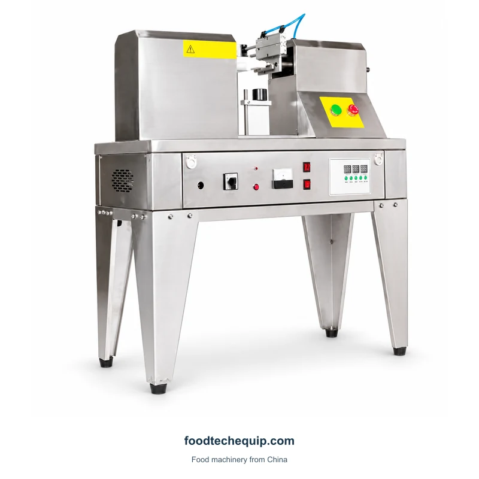
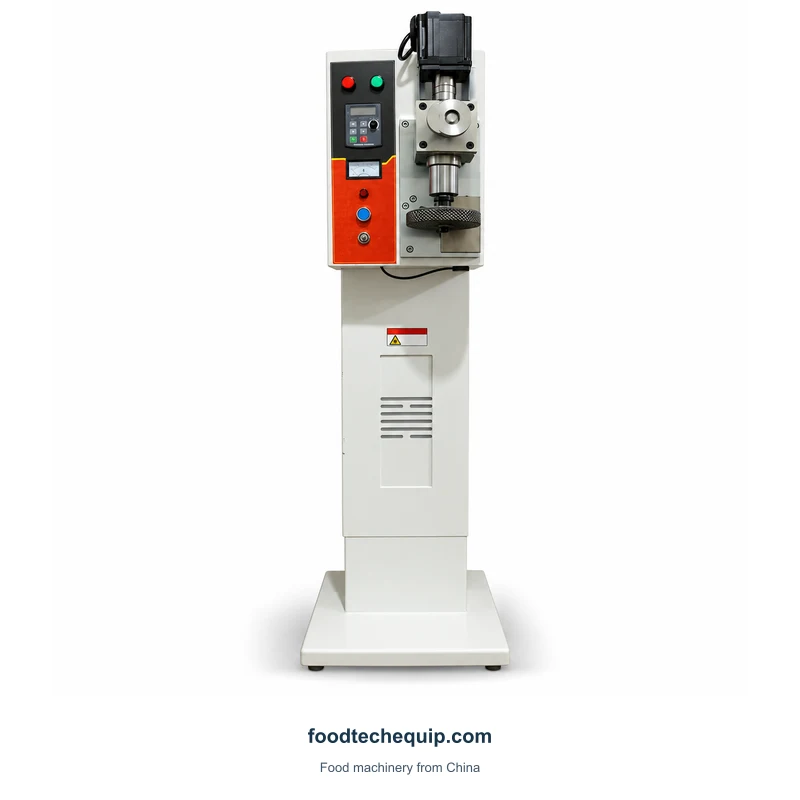
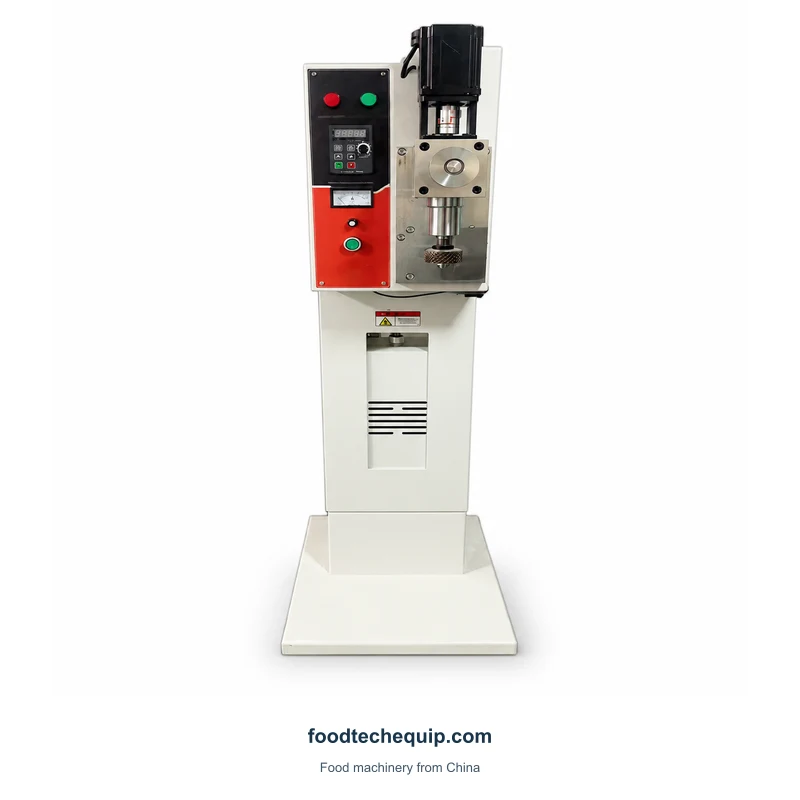

Soldagem por ultrassom
Seladora ultrassônica de sacos
Equipamento de vedação ultrassônica de piso para aplicações em sacos de tecido.
Ver equipamentoExplore equipamentos de vedação ultrassônica para sacos de não tecido, tecido e filme. Defina a composição do material, o design da costura e o manuseio da embalagem antes de escolher uma configuração.
Equipamento de vedação ultrassônica de piso para aplicações em sacos de tecido.
Ver equipamento
Equipamento ultrassônico da selagem do saco para aplicações não tecidas, tecidas e do saco plástico.
Ver equipamento
Equipamento de vedação ultrassônica para aplicações de saco de tecido não tecido.
Ver equipamento
Uma seladora ultrassônica de sacos de piso com controles frontais e acesso ao cabeçote de trabalho.
Ver equipamento
Uma seladora de saco ultrassônica vertical com cabeçote funcional e controlador com fio.
Ver equipamento
Uma máquina seladora de tubos ultrassônica com um conjunto de trabalho elevado e pernas de apoio.
Ver equipamento
Seladora de saco ultrassônica vertical com base em pedestal e painel de controle.
Ver equipamento
Uma máquina seladora ultrassônica de sacos de pedestal com painel de controle frontal.
Ver equipamento
Um selador de saco ultrassônico vertical para aplicações em tecido não tecido.
Ver equipamentoTente uma palavra-chave diferente ou limpe os filtros.
A junção ultrassônica usa a vibração mecânica na junção. A composição do polímero ou da fibra, os revestimentos e a estrutura da camada são dados importantes quando se discute uma tarefa de selagem de sacos.
Envie uma amostra do material e um desenho da costura, incluindo a posição da junta e o acesso necessário ao redor do cabeçote de trabalho.
| Área de seleção | O que comparar | O que fornecer |
|---|---|---|
| Material | Estrutura de fibra, polímero e camada completa | Amostra real incluindo revestimentos |
| Junta | Posição e formato da costura | Desenho da junta e espaço de acesso |
| Apresentação | Como a peça é fixada | Direção do feed e suporte ao pacote |
Especifique as camadas de material e a junta pretendida antes de comparar os arranjos de trabalho. O manuseio de sacos cheios e o fechamento da extremidade do tubo levantam questões diferentes de acesso e suporte, mesmo quando o processo de junção solicitado parece semelhante.